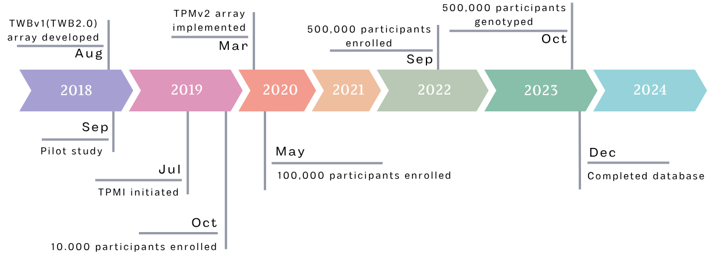
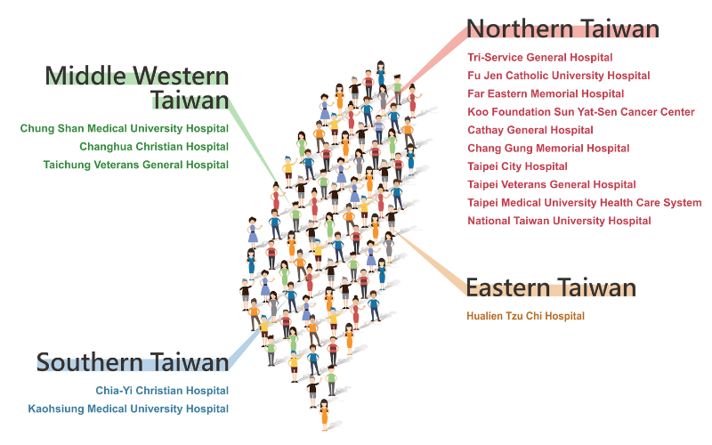
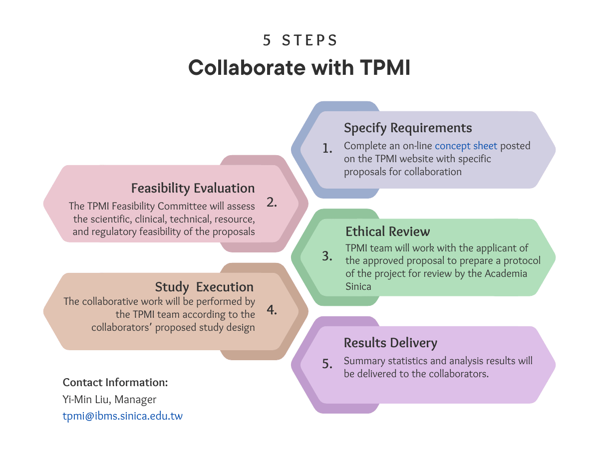

Taiwan, with its population of relatively homogeneous genetic background, comprehensive national health insurance, advanced medical system with many years of electronic medical records, and excellent R&D in information science, is in the perfect position to pursue "precision medicine".
To realize precision medicine, the foundational work of collecting genetic profiles and clinical data from a large Taiwanese cohort must be done.
TPMI Papers Published in Nature
Key Points
Two TPMI studies were published in Nature (Dec 2025), presenting a 560,000+ participant cohort with integrated genome and EMR data, alongside a News & Views commentary recognizing TPMI’s global impact.
Highlights
- One of the largest precision-medicine cohorts in East Asia
- Population-specific genetic variants linked to disease risk
- Polygenic risk scores (PRSs) developed for 265 diseases
- Improves non-European representation in global research
Downloads
Taiwan Precision Medicine Initiative
The Taiwan Precision Medicine Initiative (TPMI) is a genomic research program designed to advance precision healthcare in Taiwan. This initiative focuses on collecting and analyzing genetic and clinical data from Taiwanese individuals to develop personalized healthcare solutions tailored specifically to Taiwan’s population. With over 500,000 Taiwanese residents already enrolled, TPMI maintains the most comprehensive dataset of genotypes and electronic medical records for Han Chinese populations.
Given that Han Chinese make up about 20% of the global population, TPMI’s findings have the potential to impact healthcare for over 1.4 billion people worldwide, setting a model for precision medicine initiatives tailored to specific populations.
Milestones

Partner Hospitals
The Taiwan Precision Medicine Initiative (TPMI), launched in July 2019, is a genomic research program that aims to advance precision healthcare through collaboration between Academia Sinica and 16 major medical centers (33 hospitals in total) across Taiwan.


Academia Sinica Team
Partner Hospitals PIs

